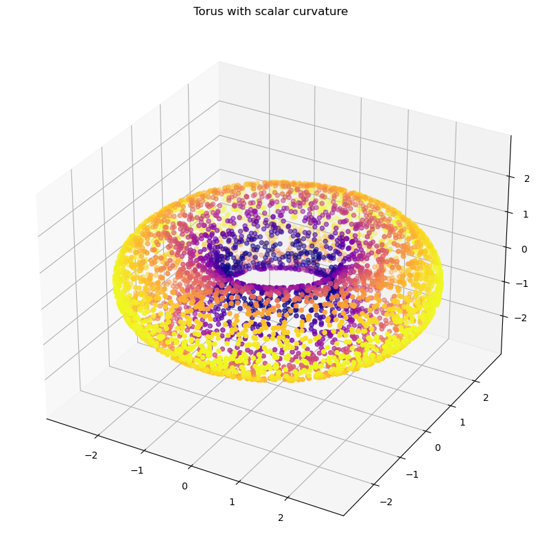
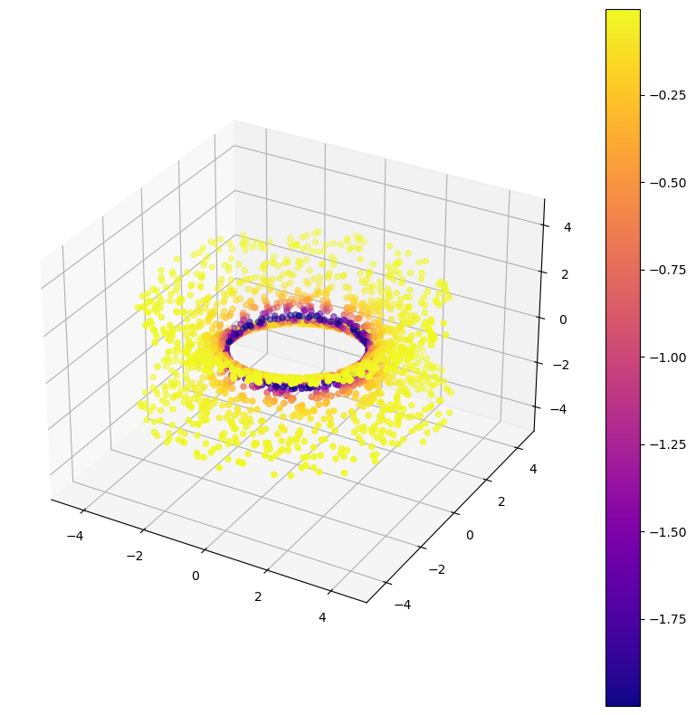
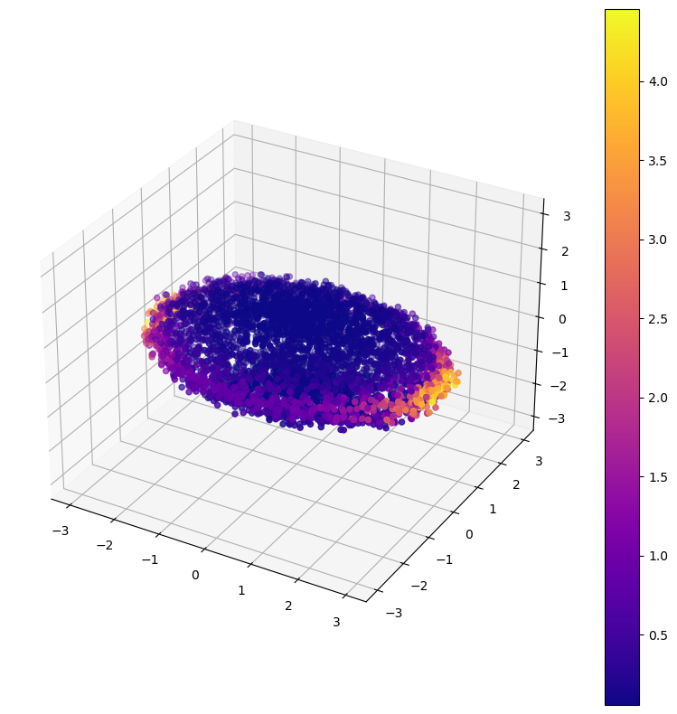
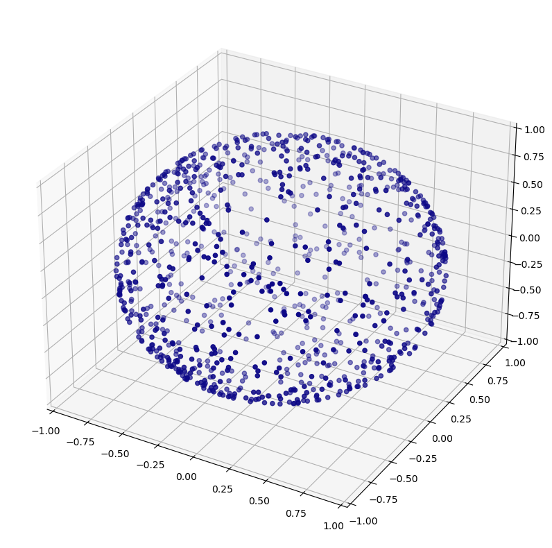
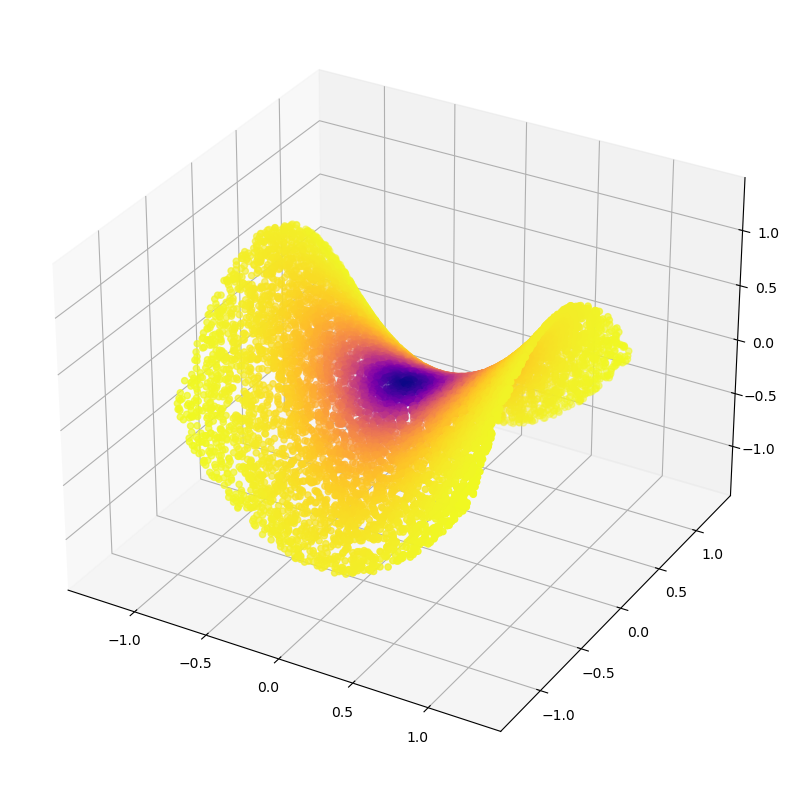

import sympy as symDatasets
::: {#cell-1 .cell 0=‘d’ 1=‘e’ 2=‘f’ 3=‘a’ 4=‘u’ 5=‘l’ 6=‘t’ 7=’_’ 8=‘e’ 9=‘x’ 10=‘p’ 11=’ ’ 12=‘d’ 13=‘a’ 14=‘t’ 15=‘a’ 16=‘s’ 17=‘e’ 18=‘t’ 19=‘s’ 20=’ ’ 21=‘h’ 22=‘i’ 23=‘d’ 24=‘e’}
%load_ext autoreload
%autoreload 2:::
Toy manifolds, their curvatures, and density-respecting samplings
::: {#cell-3 .cell 0=‘e’ 1=‘x’ 2=‘p’ 3=‘o’ 4=‘r’ 5=‘t’}
import numpy as np
from diffusion_curvature.kernels import plot_3d
from nbdev.showdoc import *:::
In this notebook, we’ll build various toy datasets and calculate their sectional curvatures.
This will use the Python symbolic computation library, sympy. Note: this library is not required to use the diffusion_curvature package. We merely employ it to calculate the curvature and appropriate expressions for rejection sampling.
theta = sym.Symbol('theta')
phi = sym.Symbol('phi')
R = sym.Symbol("R")
r = sym.Symbol("r")f1 = (R + r*sym.cos(theta))*sym.cos(phi)sym.diff(f1,theta)\(\displaystyle - r \sin{\left(\theta \right)} \cos{\left(\phi \right)}\)
f = sym.Matrix([(R + r*sym.cos(theta))*sym.cos(phi), (R + r*sym.cos(theta))*sym.sin(phi), r*sym.sin(theta)])sym.diff(f, theta)\(\displaystyle \left[\begin{matrix}- r \sin{\left(\theta \right)} \cos{\left(\phi \right)}\\- r \sin{\left(\phi \right)} \sin{\left(\theta \right)}\\r \cos{\left(\theta \right)}\end{matrix}\right]\)
(sym.diff(f, theta).T * sym.diff(f, theta))[0]\(\displaystyle r^{2} \sin^{2}{\left(\phi \right)} \sin^{2}{\left(\theta \right)} + r^{2} \sin^{2}{\left(\theta \right)} \cos^{2}{\left(\phi \right)} + r^{2} \cos^{2}{\left(\theta \right)}\)
def rejection_sample_formula(f, variables):
G = sym.Matrix.zeros(2,2)
for i, x1 in enumerate(variables):
for j, x2 in enumerate(variables):
G[i,j] = (sym.diff(f, x1).T * sym.diff(f, x2))[0]
return sym.sqrt(G.det().simplify()).simplify()t = rejection_sample_formula(f,[theta, phi])
t\(\displaystyle \sqrt{r^{2} \left(R + r \cos{\left(\theta \right)}\right)^{2}}\)
Torus
The curvature of the torus is given by \[ S(\theta) = \frac{8 \cos{\theta}}{5 + \cos{\theta}} \]
::: {#cell-17 .cell 0=‘e’ 1=‘x’ 2=‘p’ 3=‘o’ 4=‘r’ 5=‘t’}
import numpy as np
def rejection_sample_for_torus(n, r, R):
# Rejection sampling torus method [Sampling from a torus (Revolutions)](https://blog.revolutionanalytics.com/2014/02/sampling-from-a-torus.html)
xvec = np.random.random(n) * 2 * np.pi
yvec = np.random.random(n) * (1/np.pi)
fx = (1 + (r/R)*np.cos(xvec)) / (2*np.pi)
return xvec[yvec < fx]
def torus(n=2000, c=2, a=1, noise=None, seed=None, use_guide_points = False):
"""
Sample `n` data points on a torus. Modified from [tadasets.shapes — TaDAsets 0.1.0 documentation](https://tadasets.scikit-tda.org/en/latest/_modules/tadasets/shapes.html#torus)
Uses rejection sampling.
In addition to the randomly generated points, a few constant points have been added.
The 0th point is on the outer rim, in a region of high positive curvature. The 1st point is in the inside, in a region of negative curvature, and the 2nd point is on the top, where the curvature should be closer to zero.
Parameters
-----------
n : int
Number of data points in shape.
c : float
Distance from center to center of tube.
a : float
Radius of tube.
ambient : int, default=None
Embed the torus into a space with ambient dimension equal to `ambient`. The torus is randomly rotated in this high dimensional space.
seed : int, default=None
Seed for random state.
"""
assert a <= c, "That's not a torus"
if use_guide_points: n = n-3
np.random.seed(seed)
theta = np.empty(0)
while len(theta) < n:
theta = np.append(theta, rejection_sample_for_torus(100, a, c))
theta = theta[:n]
# theta = rejection_sample_for_torus(n-2, a, c)
phi = np.random.random((len(theta))) * 2.0 * np.pi
data = np.zeros((len(theta), 3))
data[:, 0] = (c + a * np.cos(theta)) * np.cos(phi)
data[:, 1] = (c + a * np.cos(theta)) * np.sin(phi)
data[:, 2] = a * np.sin(theta)
if use_guide_points:
data = np.vstack([[[0,-c-a,0],[0,c-a,0],[0,c,a]],data])
if noise:
data += noise * np.random.randn(*data.shape)
# compute curvature of sampled torus
ks = 8*np.cos(theta)/(5 + np.cos(theta))
return data, ks:::
show_doc(torus)torus
torus (n=2000, c=2, a=1, noise=None, seed=None, use_guide_points=False)
Sample n data points on a torus. Modified from tadasets.shapes — TaDAsets 0.1.0 documentation Uses rejection sampling.
In addition to the randomly generated points, a few constant points have been added. The 0th point is on the outer rim, in a region of high positive curvature. The 1st point is in the inside, in a region of negative curvature, and the 2nd point is on the top, where the curvature should be closer to zero.
| Type | Default | Details | |
|---|---|---|---|
| n | int | 2000 | Number of data points in shape. |
| c | int | 2 | Distance from center to center of tube. |
| a | int | 1 | Radius of tube. |
| noise | NoneType | None | |
| seed | NoneType | None | Seed for random state. |
| use_guide_points | bool | False |
Visualize with the curvature
X,ks = torus(n=5000)
plot_3d(X, ks, title="Torus with scalar curvature")
len(X)5000One-Sheet Hyperboloid
First, let’s determine the rejection sampling formula
a = sym.Symbol('a')
b = sym.Symbol('b')
theta = sym.Symbol("theta")
u = sym.Symbol('u')
f = sym.Matrix(
[a*sym.cos(theta)*sym.sqrt(u**2+1),b*sym.sin(theta)*sym.sqrt(u**2+1),u]
)variables = [theta, u]
rej = rejection_sample_formula(f, variables)
rej\(\displaystyle \sqrt{a^{2} b^{2} u^{2} + a^{2} u^{2} \sin^{2}{\left(\theta \right)} + a^{2} \sin^{2}{\left(\theta \right)} - b^{2} u^{2} \sin^{2}{\left(\theta \right)} + b^{2} u^{2} - b^{2} \sin^{2}{\left(\theta \right)} + b^{2}}\)
::: {#cell-26 .cell 0=‘e’ 1=‘x’ 2=‘p’ 3=‘o’ 4=‘r’ 5=‘t’}
def rejection_sample_for_hyperboloid(n,a,b,c,u_limit):
theta = np.random.random(n)*2*np.pi
u = (np.random.random(n)*2 - 1)*u_limit
fx = np.sqrt(a**2 * b**2 * u**2 + a**2 * u**2 * np.sin(theta)**2 + a**2 * np.sin(theta)**2 - b**2 * u**2 * np.sin(theta)**2 + b**2 * u**2 - b**2 * np.sin(theta)**2 + b**2)
yvec = np.random.random(n) * (1/np.max(fx))
return theta[yvec < fx], u[yvec < fx]
def hyperboloid(n=2000,a=2,b=2,c=1, u_limit = 2, seed=None):
"""Sample roughly n points on a hyperboloid, using rejection sampling.
Parameters
----------
n : int, optional
number of points, by default 2000
a : int, optional
hyperboloid param1, by default 2
b : int, optional
hyperboloid param2, by default 2
c : int, optional
stretchiness in z, by default 1
u_limit : int, optional
Constrain the free parameter u to [-l,l], by default 2
seed : int, optional
For repeatability, seed the randomness, by default None
Returns
-------
The sampled points, and the curvatures of each point
"""
np.random.seed(seed)
theta, u = rejection_sample_for_hyperboloid(n,a,b,c,u_limit)
data = np.zeros((len(theta), 3))
data[:, 0] = a*np.cos(theta)*np.sqrt(u**2 + 1)
data[:, 1] = b*np.sin(theta)*np.sqrt(u**2 + 1)
data[:, 2] = c*u
# compute curvature of sampled hyperboloid
ks = -(2/(5*data[:,2]**2 + 1)**2)
return data, ks:::
show_doc<function nbdev.showdoc.show_doc(sym, renderer=None, name: 'str | None' = None, title_level: 'int' = 3)>X, ks = hyperboloid(2000)
plot_3d(X,ks,colorbar=True,use_plotly=False)
Ellipsoid
a = sym.Symbol('a')
b = sym.Symbol('b')
c = sym.Symbol('c')
theta = sym.Symbol("theta")
phi = sym.Symbol("phi")
u = sym.Symbol('u')
f = sym.Matrix(
[a*sym.cos(theta)*sym.sin(phi),b*sym.sin(theta)*sym.sin(phi),c*sym.cos(phi)]
)variables = [theta, phi]
rej = rejection_sample_formula(f, variables)
rej\(\displaystyle \sqrt{- a^{2} b^{2} \sin^{4}{\left(\phi \right)} + a^{2} b^{2} \sin^{2}{\left(\phi \right)} + a^{2} c^{2} \sin^{4}{\left(\phi \right)} \sin^{2}{\left(\theta \right)} - b^{2} c^{2} \sin^{4}{\left(\phi \right)} \sin^{2}{\left(\theta \right)} + b^{2} c^{2} \sin^{4}{\left(\phi \right)}}\)
::: {#cell-32 .cell 0=‘e’ 1=‘x’ 2=‘p’ 3=‘o’ 4=‘r’ 5=‘t’}
def rejection_sample_for_ellipsoid(n,a,b,c):
theta = np.random.random(n)*2*np.pi
phi = np.random.random(n)*2*np.pi
fx = np.sqrt(-a**2 * b**2 * np.sin(phi)**4 + a**2 * b**2 * np.sin(phi)**2 + a**2 * c**2 * np.sin(phi)**4 * np.sin(theta)**2 - b**2 * c**2 * np.sin(phi)**4 * np.sin(theta)**2 + b**2 * c**2 * np.sin(phi)**4)
yvec = np.random.random(n) * (1/np.max(fx))
return theta[yvec < fx], phi[yvec < fx]
def ellipsoid(n=2000,a=3,b=2,c=1, seed=None, noise=None):
"""Sample roughly n points on an ellipsoid, using rejection sampling.
Parameters
----------
n : int, optional
number of points, by default 2000
a : int, optional
ellipsoid param1, by default 3
b : int, optional
ellipsoid param2, by default 2
c : int, optional
stretchiness in z, by default 1
seed : int, optional
For repeatability, seed the randomness, by default None
Returns
-------
The sampled points, and the curvatures of each point
"""
np.random.seed(seed)
theta, phi = rejection_sample_for_ellipsoid(n,a,b,c)
data = np.zeros((len(theta), 3))
data[:, 0] = a*np.cos(theta)* np.sin(phi)
data[:, 1] = b*np.sin(theta)*np.sin(phi)
data[:, 2] = c*np.cos(phi)
# compute curvature of sampled torus (gaussian curvature)
ks = 2* (a**2 * b**2 * c**2) / (a**2 * b**2 * np.cos(phi)**2 + c**2 * (b**2 * np.cos(theta)**2 + a**2 * np.sin(theta)**2)*np.sin(phi)**2)**2
# add noise to data, if needed
if noise:
noise = np.random.randn(len(data),3)*noise
data = data + noise
return data, ks:::
X, ks = ellipsoid(n=5000, noise = 0.1)
plot_3d(X,ks,colorbar=True)
Hypersphere
::: {#cell-36 .cell 0=‘e’ 1=‘x’ 2=‘p’ 3=‘o’ 4=‘r’ 5=‘t’}
import tadasets
def sphere(n, d=2, radius = 1, use_guide_points = False):
if use_guide_points:
n = n - 1
# u = np.random.normal(0,1,size=(n))
# v = np.random.normal(0,1,size=(n))
# w = np.random.normal(0,1,size=(n))
# norm = (u*u + v*v + w*w)**(0.5)
# (x,y,z) = (u,v,w)/norm
# X = np.column_stack([x,y,z])
# Use tadasets implementation
X = tadasets.dsphere(n, d=d)*radius
ks = np.ones(n)*(2/radius**2)
# Compile guidepoints if needed
if use_guide_points:
X = np.vstack([np.array([0,0,1]),X])
return X, ks:::
X, ks = sphere(n=1000)
plot_3d(X)
Random Cube
def random_cube(n):
"""Return a random cube
Parameters
----------
n : _type_
_description_
Returns
-------
_type_
_description_
"""
data = np.random.rand(n,3)
return dataSaddle Regions
Generate hyperbolic regions as test cases of Laziness curvature.
a = sym.Symbol('a')
b = sym.Symbol('b')
x = sym.Symbol("x")
y = sym.Symbol("y")
f = sym.Matrix(
[x,y,a*x**2 + b*y**2]
)variables = [x, y]
rej = rejection_sample_formula(f, variables)
rej\(\displaystyle \sqrt{4 a^{2} x^{2} + 4 b^{2} y^{2} + 1}\)
::: {#cell-43 .cell 0=‘e’ 1=‘x’ 2=‘p’ 3=‘o’ 4=‘r’ 5=‘t’}
def rejection_sample_for_saddle(n,a,b):
x = np.random.random(n)*2 - 1 # random values in -1, 1
y = np.random.random(n)*2 - 1
fx = np.sqrt(4*a**2*x**2 + 4*b**2*y**2 + 1)
yvec = np.random.random(n) * (1/np.max(fx))
return x[yvec < fx], y[yvec < fx]
def paraboloid(n=2000,a=1,b=-1, seed=None, use_guide_points = False):
"""Sample roughly n points on a saddle, using rejection sampling for even density coverage
Defined by $ax^2 + by^2$.
Parameters
----------
n : int, optional
number of points, by default 2000
a : int, optional
ellipsoid param1, by default 1
b : int, optional
ellipsoid param2, by default -1
seed : int, optional
For repeatability, seed the randomness, by default None
Returns
-------
The sampled points, and the curvatures of each point
"""
if use_guide_points:
n = n - 1
np.random.seed(seed)
x, y = rejection_sample_for_saddle(n,a,b)
if use_guide_points:
x = np.concatenate([[0],x])
y = np.concatenate([[0],y])
data = np.zeros((len(x), 3))
data[:, 0] = x
data[:, 1] = y
data[:, 2] = a*x**2 + b*y**2
# compute curvature of sampled saddle region
# TODO: Compute gaussian curvature
# TODO: Currently assuming that b is negative (hyperbolic paraboloid)
ap = np.sqrt(1/a)
bp = b/np.abs(b) * np.sqrt(1/np.abs(b))
ks = -(4*a**6 * b**6)/(a**4*b**4 + 4*b**4*x**2+4*a**4*y**2)**2
return data, ks:::
X, ks = paraboloid(n=10000, a = 1, b = -1,use_guide_points=True)plot_3d(X,ks)
x = np.zeros(10)np.concatenate([[0],x])array([0., 0., 0., 0., 0., 0., 0., 0., 0., 0., 0.])::: {#cell-48 .cell 0=‘e’ 1=‘x’ 2=‘p’ 3=‘o’ 4=‘r’ 5=‘t’}
import sympy as sp
from diffusion_curvature.random_surfaces import rejection_sample_from_surface, scalar_curvature_at_origin
def rejection_sample_from_saddle(n_samples=1000, intrinsic_dim = 2, verbose=False, intensity=1):
d = intrinsic_dim
vars = sp.symbols('x0:%d' % d)
saddle = sp.Matrix([*vars])
for i in range(d,d+1):
saddle = saddle.row_insert(i, sp.Matrix([intensity*sum([(-1)**j * vars[j]**2 for j in range(d)])]))
if verbose: print(saddle)
k = scalar_curvature_at_origin(saddle)
return rejection_sample_from_surface(saddle, n_samples), k:::
The Plane
::: {#cell-50 .cell 0=‘e’ 1=‘x’ 2=‘p’ 3=‘o’ 4=‘r’ 5=‘t’}
def plane(n, dim=2):
coords_2d = np.random.rand(n,dim)*2-1
coords_2d = np.vstack([np.zeros(dim),coords_2d])
return coords_2d:::
!nbdev_export